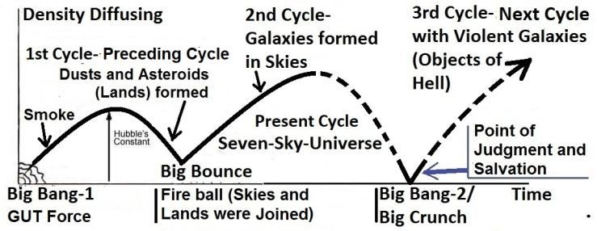

How God causes the nafs to die at death and during sleep? A nafs is a combination of unknown (yet to be discovered) force fields. It spreads throughout a man's body, with its center located below the navel. The nafs has vital points in the head, forehead, chest, palms, and feet. According to the above verses, the nafs is considered dead when a man sleeps or becomes unconscious. To understand this matter, we may discuss the following two cases:
মৃত্যু ও ঘুমের সময় ঈশ্বর কিভাবে নফসদের মৃত্যু ঘটান? নফস হল অজানা (এখনও আবিষ্কৃত) বল ক্ষেত্রগুলির সংমিশ্রণ। এটি একটি মানুষের সারা শরীরে ছড়িয়ে পড়ে, যার কেন্দ্রটি নাভির নীচে অবস্থিত। মাথা, কপাল, বুকে, হাতের তালু এবং পায়ে নফসের গুরুত্বপূর্ণ পয়েন্ট রয়েছে। উপরোক্ত আয়াত অনুসারে, একজন মানুষ যখন ঘুমিয়ে পড়ে বা অজ্ঞান হয়ে পড়ে তখন নফসকে মৃত বলে গণ্য করা হয়। এই বিষয়টি বোঝার জন্য, আমরা নিম্নলিখিত দুটি ক্ষেত্রে আলোচনা করতে পারি:
Case 1: When Allah created Adam, he had a nafs and was alive, but he was not yet conscious. Allah then breathed a special ruh into Adam, which formed his mind (qalb), making him conscious.
ঘটনা 1: আল্লাহ যখন আদমকে সৃষ্টি করেন, তখন তার একটি নফস ছিল এবং তিনি জীবিত ছিলেন, কিন্তু তিনি তখনো সচেতন ছিলেন না। আল্লাহ তখন আদমের মধ্যে একটি বিশেষ রুহ নিঃশ্বাস ত্যাগ করেন, যা তার মন (ক্বালব) গঠন করে, তাকে সচেতন করে তোলে।
Case 2: The same happens in the case of a child. His nafs is given soon after conception. When he is born, he possesses a nafs and is alive, but he remains unconscious. Allah then breathes the special ruh into him, making him conscious, and he cries for the first time.
কেস 2: একটি শিশুর ক্ষেত্রেও একই ঘটনা ঘটে। গর্ভধারণের পরপরই তার নফস দেওয়া হয়। তিনি যখন জন্মগ্রহণ করেন, তিনি একটি নফসের অধিকারী হন এবং জীবিত থাকেন, কিন্তু তিনি অজ্ঞান থাকেন। আল্লাহ তখন তার মধ্যে বিশেষ রূহ ফুঁকে, তাকে সচেতন করে তোলে এবং সে প্রথমবার কাঁদে।
From the above two cases, we understand that a ruh makes a person conscious. A person is considered conscious when he is capable of thinking, and thinking is related to the mind (qalb). The ruh is responsible for producing the mind. According to the Quran and Hadith, as discussed in Section-10 of Chapter-6, the special ruh attaches to certain muscles in the chest. The ruh, the chest muscles, the nerves connected to these muscles—including the central nervous system (CNS)—and the brain collectively produce a virtual brain, which we refer to as the mind (qalb). Thus, the special ruh forms the mind by becoming its active platform. How does the special ruh keep the thought process in order? The brain preserves vast amounts of information. The special ruh possesses two inherent emotions—joy and sorrow—that inspire the brain to provide the data relevant to a particular thought. It tends to focus on thoughts that bring joy. In this way, the special ruh opens the mind (qalb) and makes a person conscious with orderly thoughts. The other emotions of a human come from his nafs. The nafs is a combination of unknown force fields, with each force field possessing at least two basic emotions. A nafs and related emotions primarily act through the mind. As a result, a human's nafs becomes inactive when mind is dismantled due to the ruh seized by God. A nafs is a composite force field; it cannot die like a physical body. When a nafs becomes inactive, it is considered dead, as said in the verse under discussion: "God causes the nafses die at death, and those that die not during their sleep…" At the time of death, the angel collects the nafs. The ruh is always collected by God—both during sleep and at the time of death, as the verse under discussion states: "…those on whom He has passed the decree of death, He keeps back; but the rest He sends for a term appointed; verily in this are signs for those who reflect." [The ruh and the nafs are deliberately discussed in Section-10 of Chapter-6.]
উপরের দুটি ঘটনা থেকে আমরা বুঝতে পারি যে একটি রুহ একজন ব্যক্তিকে সচেতন করে তোলে। একজন ব্যক্তি যখন চিন্তা করতে সক্ষম হয় তখন তাকে সচেতন বলে মনে করা হয় এবং চিন্তাভাবনা মনের সাথে সম্পর্কিত (ক্বালব)। রুহ মন উৎপাদনের জন্য দায়ী। কুরআন ও হাদিস অনুসারে, অধ্যায়-6-এর ধারা-10-এ আলোচনা করা হয়েছে, বিশেষ রূহ বুকের নির্দিষ্ট পেশীগুলির সাথে সংযুক্ত। রুহ, বুকের পেশী, এই পেশীগুলির সাথে সংযুক্ত স্নায়ুগুলি - কেন্দ্রীয় স্নায়ুতন্ত্র (সিএনএস) সহ - এবং মস্তিষ্ক সম্মিলিতভাবে একটি ভার্চুয়াল মস্তিষ্ক তৈরি করে, যাকে আমরা মন (ক্বালব) হিসাবে উল্লেখ করি। এইভাবে, বিশেষ রুহ তার সক্রিয় প্ল্যাটফর্ম হয়ে মন গঠন করে। বিশেষ রূহ কীভাবে চিন্তা প্রক্রিয়াকে ঠিক রাখে? মস্তিষ্ক প্রচুর পরিমাণে তথ্য সংরক্ষণ করে। বিশেষ রুহ দুটি অন্তর্নিহিত আবেগ-আনন্দ এবং দুঃখ- যা মস্তিষ্ককে একটি নির্দিষ্ট চিন্তার সাথে প্রাসঙ্গিক তথ্য সরবরাহ করতে অনুপ্রাণিত করে। এটি এমন চিন্তার উপর ফোকাস করে যা আনন্দ নিয়ে আসে। এইভাবে, বিশেষ রূহ মনকে (ক্বালব) খুলে দেয় এবং একজন ব্যক্তিকে সুশৃঙ্খল চিন্তাভাবনা দিয়ে সচেতন করে তোলে। মানুষের অন্যান্য আবেগ তার নফস থেকে আসে। নফস হল অজানা বল ক্ষেত্রগুলির সংমিশ্রণ, প্রতিটি বল ক্ষেত্রের অন্তত দুটি মৌলিক আবেগ রয়েছে। একটি নফস এবং সম্পর্কিত আবেগ প্রাথমিকভাবে মনের মাধ্যমে কাজ করে। ফলস্বরূপ, মানুষের নফস নিষ্ক্রিয় হয়ে যায় যখন ঈশ্বরের দ্বারা জব্দ করা রুহের কারণে মন ভেঙে যায়। একটি নফস একটি যৌগিক শক্তি ক্ষেত্র; এটি একটি শারীরিক শরীরের মত মরতে পারে না। যখন একটি নফস নিষ্ক্রিয় হয়ে যায়, তখন তাকে মৃত বলে গণ্য করা হয়, যেমনটি আলোচনার অধীন আয়াতে বলা হয়েছে: "আল্লাহ নফসদের মৃত্যু ঘটান, এবং যারা তাদের ঘুমের মধ্যে মারা যায় না..." মৃত্যুর সময়, ফেরেশতা নফস সংগ্রহ করেন। রূহ সর্বদা ঈশ্বরের দ্বারা সংগ্রহ করা হয় - ঘুমের সময় এবং মৃত্যুর সময়, যেমন আলোচ্য আয়াতে বলা হয়েছে: "...যাদের উপর তিনি মৃত্যুর আদেশ দিয়ে গেছেন, তিনি তাকে ফিরিয়ে রাখেন; কিন্তু বাকিদের তিনি একটি নির্দিষ্ট মেয়াদের জন্য পাঠান; নিশ্চয় এতে চিন্তাশীলদের জন্য নিদর্শন রয়েছে।" [অধ্যায়-6-এর ধারা-10-এ রুহ ও নফস ইচ্ছাকৃতভাবে আলোচনা করা হয়েছে।]
What! Do they take for intercessors others besides God? Say: "Even if they have no power whatever and no intelligence?" Say: "To God belongs exclusively intercession. To Him belongs the dominion of the Skies and Lands. In the end, it is to Him that ye shall be brought back." When God the one and only is mentioned, the hearts of those who believe not in the hereafter are filled with disgust and horror, but when other than He are mentioned, behold, they are filled with joy! Say: "O God, Creator of the Skies and Lands, Knower of all that is hidden and open, it is Thou that will judge between Thy servants in those matters about which they have differed." Even if the wrongdoers had all that there is on earth and as much more would they offer it for ransom from the pain of the penalty on the Day of Judgment—but something will confront them from God, which they could never have counted upon, and will become apparent to them satans (jinns), what they earned, and will surround them what they used to mock!
কি! তারা কি ঈশ্বর ব্যতীত অন্যদের সুপারিশকারী গ্রহণ করে? বল, "যদিও তাদের কোন ক্ষমতা এবং কোন বুদ্ধি না থাকে?" বলুনঃ আল্লাহর কাছে একান্ত সুপারিশ। আসমান ও জমিনের রাজত্ব তাঁরই। শেষ পর্যন্ত তাঁরই কাছে তোমাদের ফিরিয়ে আনা হবে। যখন একমাত্র আল্লাহর কথা বলা হয়, তখন যারা পরকালে বিশ্বাস করে না তাদের অন্তর ঘৃণা ও আতঙ্কে ভরে যায়, কিন্তু যখন তিনি ছাড়া অন্যদের উল্লেখ করা হয়, তখন তারা আনন্দে ভরে যায়! বলুন: "হে আল্লাহ, আকাশ ও জমিনের স্রষ্টা, গোপন ও প্রকাশ্য সবকিছুর জ্ঞাত, আপনিই আপনার বান্দাদের মধ্যে যে বিষয়ে তারা মতভেদ করেছেন সে বিষয়ে আপনিই বিচার করবেন।" এমনকি যদি জালেমদের কাছে পৃথিবীতে যা কিছু আছে সবই থাকত এবং বিচারের দিন শাস্তির যন্ত্রণা থেকে মুক্তির জন্য তারা তা প্রদান করত-কিন্তু আল্লাহর কাছ থেকে এমন কিছু তাদের মুখোমুখি হবে, যা তারা কখনই গণনা করতে পারেনি, এবং তাদের কাছে শয়তান (জিন), তারা যা অর্জন করেছে তা প্রকাশ পাবে এবং তারা যা নিয়ে উপহাস করত তা তাদের ঘিরে ফেলবে!
The last paragraph of the above verses states that a human can earn a satan (jinn). How? If a person worships idols, he may become possessed by a satan jinni, even though he may not feel its presence. Over time, his nafs becomes deformed as it learns to sustain both a human body and a jinn body together, and evolve accordingly. At the time of death, his nafs gets fixed in deformed shape and program of resurrection. He will resurrect in devil-human shape, as a giant, thousand kilometers tall. Thus, the verses say: ―…and will become apparent to them satan, what they earned…‖ An idolater will be so disheartened by seeing his physical shape that he will not ask for forgiveness. He will clearly feel that he has no way but to go to the hell (galaxies of this universe) with the jinns, as the verses say: "…but something will confront them from God, which they could never have counted upon, and will become apparent to them satans (jinns), what they earned…" [It is deliberately discussed in Section-10 of Chapter- 6]
উপরের আয়াতের শেষ অনুচ্ছেদে বলা হয়েছে যে একজন মানুষ শয়তান (জিন) উপার্জন করতে পারে। কিভাবে? যদি একজন ব্যক্তি মূর্তি পূজা করে, তবে সে শয়তান জিন্নি দ্বারা আবিষ্ট হতে পারে, যদিও সে তার উপস্থিতি অনুভব করতে পারে না। সময়ের সাথে সাথে, তার নফস বিকৃত হয়ে যায় কারণ এটি একটি মানবদেহ এবং একটি জিন দেহ উভয়কেই একসাথে টিকিয়ে রাখতে শেখে এবং সেই অনুযায়ী বিকশিত হয়। মৃত্যুর সময় তার নফস বিকৃত আকারে এবং পুনরুত্থানের কর্মসূচিতে স্থির হয়ে যায়। তিনি শয়তান-মানব আকৃতিতে পুনরুত্থিত হবেন, একটি দৈত্য হিসাবে, হাজার কিলোমিটার লম্বা। সুতরাং, আয়াতগুলি বলে: "...এবং তাদের কাছে শয়তান স্পষ্ট হয়ে যাবে, তারা যা অর্জন করেছে..." একজন মুশরিক তার শারীরিক আকৃতি দেখে এতটাই হতাশ হবে যে সে ক্ষমা চাইবে না। তিনি স্পষ্টভাবে অনুভব করবেন যে জিনদের সাথে জাহান্নামে (এই মহাবিশ্বের ছায়াপথ) যাওয়া ছাড়া তার আর কোন উপায় নেই, যেমন আয়াতে বলা হয়েছে: "...কিন্তু আল্লাহর পক্ষ থেকে তাদের এমন কিছু মুখোমুখি হবে, যা তারা কখনও গণনা করতে পারেনি, এবং তাদের কাছে শয়তান (জিন) স্পষ্ট হয়ে উঠবে, যা তারা অর্জন করেছে..." [এটি ইচ্ছাকৃতভাবে আলোচনা করা হয়েছে - 1-6-এর অধ্যায়ে]
Now, when trouble touches man he cries to Us, but when We bestow a favor upon him as from Ourselves he says: "This has been given to me because of a certain knowledge!" Nay, but this is but a trial, but most of them understand not! Thus, did the (generations) before them say! But all that they did was of no profit to them, nay, the evil results of their deeds overtook them. And the wrongdoers of this—the evil results of their deeds will soon overtake them, and they will never be able to frustrate! Know they not that God enlarges the provision or restricts it for any He pleases? Verily, in this are signs for those who believe! Say: ―O my servants, who have transgressed against their souls, despair not of the mercy of God; for God forgives all sins; for He is Oft-Forgiving, Most Merciful. Turn ye to our Lord and bow to His (will) before the penalty comes on you; after that ye shall not be helped. And follow the best of revealed to you from your Lord before the penalty comes on you of a sudden, while ye perceive not! Lest the soul should say: ―Ah! Woe is me! In that I neglected towards God and was but among those who mocked!‖ Or it should say: ―If only God had guided me, I should certainly have been among the guards!‖ Or it should say when it sees the penalty: ―If only I had another chance, I should certainly be among those who do good!‖‖ Nay, but there came to thee my signs, and thou did reject them; thou were haughty and became one of those who reject faith! On the Day of Judgment will thou see those who told lies against God; their faces will be turned black—is there not in hell an abode for the haughty? But God will deliver the guards to their place of salvation; no evil shall touch them, nor shall they grieve. God is the creator of all things, and He is the Guardian and Disposer of all affairs. To Him belong the keys of the Skies and Lands. And those who reject the verses of God, it is they who will be in loss. Say: "Is it someone other than God that ye order me to worship, O ye ignorant ones? But it has already been revealed to thee, as it was to those before thee, if thou were to join (gods with God), truly fruitless will be thy work and thou will surely be in the ranks of those who lose". Nay, but worship God and be of those who give thanks. Section 6 of Chapter 39 [Verse 67-75]: The Judgment Day (Main Discussion)
এখন, যখন মানুষকে কষ্ট দেয়, তখন সে আমাদের কাছে কান্নাকাটি করে, কিন্তু যখন আমরা তাকে নিজের পক্ষ থেকে অনুগ্রহ দান করি তখন সে বলে: "এটি আমাকে একটি নির্দিষ্ট জ্ঞানের কারণে দেওয়া হয়েছে!" বরং এটা তো পরীক্ষা, কিন্তু তাদের অধিকাংশই বোঝে না! তাদের পূর্ববর্তীরা কি এভাবেই বলেছিল! কিন্তু তারা যা কিছু করেছিল তাতে তাদের কোন লাভ হয়নি, বরং তাদের কৃতকর্মের মন্দ ফল তাদেরকে গ্রাস করেছিল। আর এর জালেমরা- তাদের কৃতকর্মের মন্দ ফল শীঘ্রই তাদের গ্রাস করবে এবং তারা কখনো নিরাশ করতে পারবে না! তারা কি জানে না যে, ঈশ্বর রিযিক প্রশস্ত করেন বা যার জন্য ইচ্ছা সীমিত করেন? নিশ্চয় এতে ঈমানদারদের জন্য নিদর্শন রয়েছে। বলুনঃ হে আমার বান্দাগণ, যারা নিজেদের উপর সীমালঙ্ঘন করেছে, আল্লাহর রহমত থেকে নিরাশ হয়ো না। কারণ ঈশ্বর সমস্ত পাপ ক্ষমা করেন; কারণ তিনি ক্ষমাশীল, পরম করুণাময়। তোমরা আমাদের পালনকর্তার দিকে ফিরে যাও এবং তোমাদের উপর শাস্তি আসার আগে তাঁর (ইচ্ছা) কাছে মাথা নত কর। এরপর তোমাদের সাহায্য করা হবে না। আর অনুসরণ কর তোমার প্রতিপালকের পক্ষ থেকে তোমার প্রতি অবতীর্ণ সর্বোত্তম যা আকস্মিকভাবে তোমার উপর আযাব আসার পূর্বে, অথচ তোমরা টেরও পাবে না। পাছে আত্মা বলতে না পারে: "আহ! হায় আমার! এতে আমি ঈশ্বরের প্রতি অবহেলা করেছিলাম এবং যারা উপহাস করেছিল তাদের মধ্যে ছিলাম!” অথবা বলা উচিত: “আল্লাহ যদি আমাকে পথ দেখাতেন তবে আমি অবশ্যই রক্ষকদের মধ্যে থাকতাম!” অথবা এটি যখন শাস্তি দেখবে তখন বলা উচিত: “যদি আমার আর একটি সুযোগ থাকত, আমি অবশ্যই তাদের মধ্যে হব যারা ভাল কাজ করে!” কিন্তু সেখানে আমার চিহ্ন এসেছে, এবং তা হল! তাদের; তুমি অহংকারী ছিলে এবং বিশ্বাস প্রত্যাখ্যানকারীদের অন্তর্ভুক্ত হয়েছ! কেয়ামতের দিন আপনি তাদের দেখতে পাবেন যারা আল্লাহর বিরুদ্ধে মিথ্যা বলেছে। তাদের মুখমন্ডল কালো করে দেয়া হবে-অহংকারীদের জন্য কি জাহান্নামে নেই? কিন্তু ঈশ্বর রক্ষীদের তাদের পরিত্রাণের জায়গায় পৌঁছে দেবেন; কোন মন্দ তাদের স্পর্শ করবে না এবং তারা দুঃখিত হবে না। আল্লাহ সব কিছুর স্রষ্টা এবং তিনি সকল বিষয়ের অভিভাবক ও নিষ্পত্তিকারী। আকাশ ও জমিনের চাবি তাঁরই। আর যারা আল্লাহর আয়াতকে প্রত্যাখ্যান করে, তারাই ক্ষতিগ্রস্ত। বলুন: "হে অজ্ঞ লোকেরা, তোমরা কি আমাকে আল্লাহ ছাড়া অন্য কারো উপাসনা করার আদেশ করছ? কিন্তু এটি ইতিমধ্যেই তোমার কাছে ওহী করা হয়েছে, যেমনটি ছিল তোমার পূর্ববর্তীদের কাছে, যদি তুমি (আল্লাহর সাথে উপাস্যদের) শরীক হতে, তাহলে তোমার কর্ম নিষ্ফল হবে এবং তুমি অবশ্যই ক্ষতিগ্রস্তদের কাতারে থাকবে"। বরং আল্লাহর ইবাদত কর এবং কৃতজ্ঞদের অন্তর্ভুক্ত হও। অধ্যায় 39 এর ধারা 6 [শ্লোক 67-75]: বিচারের দিন (মূল আলোচনা)
And not they honored Allah, true honor, while the Land is assembling in His hand on the Day of Resurrection; and the Skies (Samawaat / this Universe) rolled-up in His right hand. Glory be to Him! And high is He above what they associate (with Him).
এবং তারা আল্লাহকে সম্মান করেনি, সত্যিকারের সম্মান, যখন ভূমি কিয়ামতের দিন তাঁর হাতে সমবেত হবে; এবং আকাশ (সামাওয়াত / এই মহাবিশ্ব) তার ডান হাতে গড়িয়েছে। তিনি পবিত্র! এবং তারা যাকে শরীক করে তিনি তার উর্ধ্বে।
It is the model of the Day of Judgment. If one gathers the verses of the Quran related to the Day of Judgment and arranges them in a logical sequence, they support each other and form this model. The topic includes diverse discussions. Therefore, the framework of the model is provided below to help the reader maintain focus on the main track: 1. The Quran states that this universe (Samawaat) will collapse and then will be revived. In the revived initial universe, the dead will be resurrected, and their judgment will take place on a specially created Land (the Land of Judgment) in the Super Space. 2. After the judgment, the Believers will be relocated to another universe called Jannaat, where they will live forever in peace and satisfaction as empowered vicegerents of God. 3. The sinners will be left in the reviving universe (Samawaat). Eventually, they will be scattered in the reviving galaxies. They will live in those galaxies forever, as forgotten vicegerents of God. The galaxies are the objects of hell.
এটা কেয়ামতের মডেল। কেয়ামতের সাথে সম্পর্কিত কুরআনের আয়াতগুলোকে একত্রিত করে যৌক্তিক ক্রমানুসারে সাজিয়ে রাখলে তারা একে অপরকে সমর্থন করে এবং এই মডেল তৈরি করে। বিষয় বিভিন্ন আলোচনা অন্তর্ভুক্ত. তাই, পাঠককে মূল ট্র্যাকের উপর ফোকাস বজায় রাখতে সাহায্য করার জন্য মডেলটির কাঠামো নীচে দেওয়া হয়েছে: 1. কুরআন বলে যে এই মহাবিশ্ব (সামাওয়াত) ভেঙে পড়বে এবং তারপর পুনরুজ্জীবিত হবে। পুনরুজ্জীবিত প্রাথমিক মহাবিশ্বে, মৃতদের পুনরুত্থিত করা হবে, এবং তাদের বিচার হবে সুপার স্পেসে একটি বিশেষভাবে তৈরি ভূমিতে (বিচারের দেশ)। 2. বিচারের পরে, বিশ্বাসীদেরকে জান্নাত নামক অন্য একটি মহাবিশ্বে স্থানান্তরিত করা হবে, যেখানে তারা ঈশ্বরের ক্ষমতাপ্রাপ্ত ভাইসজেন্ট হিসাবে শান্তি ও সন্তুষ্টিতে চিরকাল বসবাস করবে। 3. পাপীদের পুনরুজ্জীবিত মহাবিশ্বে (সামাওয়াত) ছেড়ে দেওয়া হবে। অবশেষে, তারা পুনরুজ্জীবিত গ্যালাক্সিতে ছড়িয়ে পড়বে। তারা চিরকাল সেই ছায়াপথে বাস করবে, ঈশ্বরের ভুলে যাওয়া ভাইসার্জেন্ট হিসাবে। ছায়াপথগুলো নরকের বস্তু।
The Judgment Day is described under the following headings: 1. Cyclic Model of the Universe 2. The Roll-up-Closing of the Universe 3. In the State of Thaqal (Heavy Mass) 4. The Land of Judgment 5. Blow of Trumpet (Soor) 6. Amal-Nama 7. Resurrection and Rebooting the Brain 8. Major Safayat 9. Marshaling for the Judgment 10. The Judgment 11. Moving to the Final Destinations 12. Destination 13. Conclusion 14. Summary
বিচার দিবসটি নিম্নোক্ত শিরোনামের অধীনে বর্ণিত হয়েছে: 1. মহাবিশ্বের চক্রীয় মডেল 2. মহাবিশ্বের রোল-আপ-ক্লোজিং 3. থাকাল রাজ্যে (ভারী ভর) 4. বিচারের ভূমি 5. ট্রাম্পেটের ফুঁ (সুর) 6. আমল-নামা 7. পুনরুত্থান এবং পুনরুত্থান9। বিচারের জন্য মার্শালিং 10. রায় 11. চূড়ান্ত গন্তব্যে চলে যাওয়া 12. গন্তব্য 13. উপসংহার 14. সারাংশ
Background Knowledge: It is better if a reader has gone through the following Section: The Large-Scale Structure of the Universe: Section-7 of Chapter-2 Jannaat: Section-23 of Chapter-3 Hell: Section-27 of Chapter-3 Creation of the Universe: Section-4 of Chapter-21 Future of the Universe: Section-10 of Chapter-21 The Doomsday and Resurrection: Section-7 of Chapter-30 1. Cyclic Model of the Universe
ব্যাকগ্রাউন্ড নলেজ: একজন পাঠক যদি নিম্নলিখিত বিভাগটি দেখে থাকেন তাহলে ভালো হয়: মহাবিশ্বের বৃহৎ আকারের কাঠামো: অধ্যায়-2-এর বিভাগ-7 জান্নাত: অধ্যায়-3-এর অধ্যায়-23 জাহান্নাম: অধ্যায়-3-এর অধ্যায়-27 মহাবিশ্বের অধ্যায়-24-এর অধ্যায় মহাবিশ্বের ভবিষ্যৎ: অধ্যায়-21-এর অধ্যায়-10 কিয়ামত ও পুনরুত্থান: অধ্যায়-30 এর অধ্যায়-7 1. মহাবিশ্বের চক্রীয় মডেল
The Quran suggests a Cyclic Model of the Universe where we are living in the Second Cycle. The Preceding (First) Cycle, the Present (Second) Cycle, and the Next (Third) Cycle are outlined below:
কুরআন মহাবিশ্বের একটি চক্রীয় মডেলের পরামর্শ দেয় যেখানে আমরা দ্বিতীয় চক্রে বাস করছি। পূর্ববর্তী (প্রথম) চক্র, বর্তমান (দ্বিতীয়) চক্র এবং পরবর্তী (তৃতীয়) চক্র নীচে বর্ণিত হয়েছে:
FIGURE 39.2: Cyclic Universe

চিত্র 39_2 / Figure 39_2
চিত্র 39.2: চক্রীয় মহাবিশ্ব
চিত্র 39_2 / Figure 39_2
1a. The Preceding (First) Cycle of the Universe
1 ক. মহাবিশ্বের পূর্ববর্তী (প্রথম) চক্র
The Quran indicates that the universe was created in the preceding (first) cycle from the Nafsin-Wahidatin / GUT Force + (Plus). The GUT force operated shortly after the Big Bang during a phase of extremely high temperatures and energies. As the universe cooled and symmetry breaking occurred, the unified GUT force split into the strong, weak, and electromagnetic forces, resulting in the emergence of distinct particles. These forces governed how matter interacted and clumped together. Thus, the Big Bang produced smoke, primarily composed of hydrogen and helium. It was a uniform single-sky universe, which caused the gases to spread evenly throughout the space. GUT Force did not include gravitational force. Allah infused gravitational force into this smoke, as the following verses say:
কুরআন ইঙ্গিত করে যে মহাবিশ্বটি নাফসিন-ওয়াহিদাতিন/জিইউটি ফোর্স + (প্লাস) থেকে পূর্ববর্তী (প্রথম) চক্রে সৃষ্টি হয়েছিল। GUT বাহিনী বিগ ব্যাং-এর পরপরই অত্যন্ত উচ্চ তাপমাত্রা এবং শক্তির একটি পর্যায়ে কাজ করেছিল। মহাবিশ্ব শীতল হওয়ার সাথে সাথে প্রতিসাম্য ভাঙ্গার ঘটনা ঘটে, একীভূত GUT বল শক্তিশালী, দুর্বল এবং ইলেক্ট্রোম্যাগনেটিক শক্তিতে বিভক্ত হয়, যার ফলে স্বতন্ত্র কণার উদ্ভব হয়। এই বাহিনীগুলি নিয়ন্ত্রণ করে যে কীভাবে বিষয়গুলি মিথস্ক্রিয়া করে এবং একত্রিত হয়। এইভাবে, বিগ ব্যাং ধোঁয়া উৎপন্ন করেছিল, যা প্রাথমিকভাবে হাইড্রোজেন এবং হিলিয়াম দ্বারা গঠিত। এটি একটি অভিন্ন একক-আকাশ মহাবিশ্ব, যার কারণে গ্যাসগুলি সমগ্র মহাকাশে সমানভাবে ছড়িয়ে পড়ে। GUT ফোর্স মহাকর্ষ বল অন্তর্ভুক্ত করেনি। আল্লাহ এই ধোঁয়ায় মাধ্যাকর্ষণ শক্তি যোগ করেছেন, যেমনটি নিম্নলিখিত আয়াতে বলা হয়েছে:
―Moreover, did istawa (infused gravitational force) into the sky (single-sky-universe of the first cycle) while it had been smoke…‖ [Al Quran 41:11-12]
"এছাড়াও, আকাশে (প্রথম চক্রের একক-আকাশ-মহাবিশ্ব) ইস্তওয়া (অভিকর্ষীয় বল) প্রবেশ করেছিল যখন এটি ধোঁয়া ছিল..." [আল কুরআন 41:11-12]
The gravitational force is a force of Allah, which He has infused into this universe through the right hand of His nafs.
মাধ্যাকর্ষণ শক্তি আল্লাহর একটি শক্তি, যা তিনি তাঁর নফসের ডান হাত দিয়ে এই মহাবিশ্বে প্রবেশ করেছেন।
1b. The Second (Present) Cycle of the Universe
1 খ. মহাবিশ্বের দ্বিতীয় (বর্তমান) চক্র
Allah infused gravitational force (did istawa) into the universe of the first cycle. This gravitational force contracted the universe and produced heavier elements, at least up to silicon, possibly in the large hot stars of the first cycle. The stars formed mainly from the smoke (hydrogen and helium). These heavier elements gave rise to dust and asteroids, which are referred to as 'lands' in the following verse:
আল্লাহ প্রথম চক্রের মহাবিশ্বে মাধ্যাকর্ষণ শক্তি (ইস্তাওয়া করেছিলেন) প্রবেশ করান। এই মাধ্যাকর্ষণ শক্তি মহাবিশ্বকে সংকুচিত করেছিল এবং সম্ভবত প্রথম চক্রের বৃহৎ উত্তপ্ত নক্ষত্রগুলিতে অন্তত সিলিকন পর্যন্ত ভারী উপাদান তৈরি করেছিল। নক্ষত্রগুলি মূলত ধোঁয়া (হাইড্রোজেন এবং হিলিয়াম) থেকে গঠিত হয়। এই ভারী উপাদানগুলি ধুলো এবং গ্রহাণুর জন্ম দিয়েছে, যেগুলিকে নিম্নলিখিত আয়াতে 'ভূমি' হিসাবে উল্লেখ করা হয়েছে:
―Moreover, did istawa (infused gravitational force) into the sky while it had been smoke. He said to it (smoke) and to the lands, ―Come ye together, willingly or unwillingly.‖ They said, ―We do come in willing obedience‖.‖ So, We completed them as seven skies in two days and inspired in each Sky its affairs.‖ [Al Quran 41: 11–12]
-এছাড়াও, ধোঁয়া অবস্থায় আকাশে ইসতাওয়া (অভিকর্ষীয় বল) প্রবেশ করেছে। তিনি এটিকে (ধোঁয়া) এবং জমিগুলিকে বললেন, "তোমরা স্বেচ্ছায় বা অনিচ্ছায় একত্র হও।" তারা বলল, "আমরা স্বেচ্ছায় আনুগত্য নিয়ে এসেছি"।" সুতরাং, আমরা তাদের দুই দিনে সাত আসমান হিসাবে পূর্ণ করেছি এবং প্রতিটি আকাশে তার বিষয়াবলী প্রেরণ করেছি।'' [আল কুরআন: 1-1]
The single-sky universe of the first cycle collapsed faster and faster under the overwhelming pull of gravity until it compressed into a fireball and then bounced back. Thus, the second (present) cycle of the universe began when the smoke and lands (dust and asteroids), produced during the contracting phase of the first cycle, were distributed across seven spherical waves of space. These waves of space are the skies, nested one inside the other, like the layers of an onion. In this way, the universe in the present (second) cycle has been re-designed as a seven-sky universe.
প্রথম চক্রের একক-আকাশ মহাবিশ্ব মহাকর্ষের অপ্রতিরোধ্য টানের অধীনে দ্রুত এবং দ্রুত ধসে পড়ে যতক্ষণ না এটি একটি ফায়ারবলে সংকুচিত হয় এবং তারপরে ফিরে আসে। এইভাবে, মহাবিশ্বের দ্বিতীয় (বর্তমান) চক্রটি শুরু হয়েছিল যখন প্রথম চক্রের সংকোচন পর্যায়ে উত্পাদিত ধোঁয়া এবং ভূমি (ধুলো এবং গ্রহাণু), মহাকাশের সাতটি গোলাকার তরঙ্গ জুড়ে বিতরণ করা হয়েছিল। মহাকাশের এই তরঙ্গগুলি হল আকাশ, পেঁয়াজের স্তরগুলির মতো একটির ভিতরে অন্যটি বাসা বাঁধে। এইভাবে, বর্তমান (দ্বিতীয়) চক্রের মহাবিশ্বকে সাত আকাশের মহাবিশ্ব হিসাবে পুনরায় ডিজাইন করা হয়েছে।
1c. The Third (Next) Cycle of the Universe
1 গ. মহাবিশ্বের তৃতীয় (পরবর্তী) চক্র